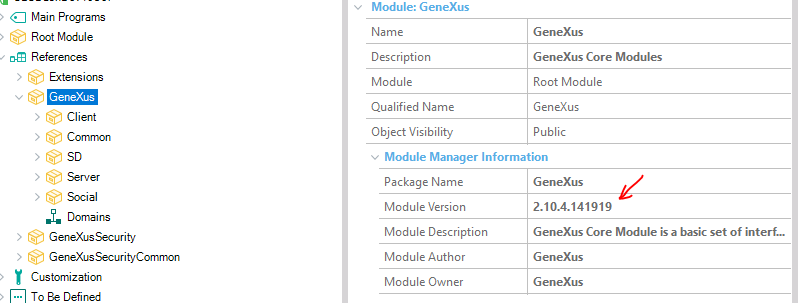

The GeneXus Core module is automatically updated in GeneXus. This document briefly explains how this update is handled. When is it automatically updated?When an object build is done, the module version in the KB/version and the one corresponding to the GeneXus version being used are checked. If they match, nothing is done; otherwise, the module is updated with the one corresponding to the GeneXus version in use, and a message similar to the following is displayed: warning: Updating 'GeneXus' module version from 2.7.6.137685 to required 2.10.4.141919. This indicates that the module has been updated from version 2.7 (GeneXus V16 Upgrade 7) to version 2.10 (V16 Upgrade 10). What is the module version in the KB/Version?It is the one indicated in its properties:  What is the module version required by the GeneXus version being used?It can be found in the file builtinModules.config below the Modules folder in the GeneXus installation. Example: C:\Program Files (x86)\GeneXus\GeneXus16u10\Modules\builtinModules.config It contains information about all the built-in modules and, in particular, GeneXus Core. It is an XML file and includes a line such as: <module id="GeneXus" version="2.10.4.141919" /> When is the module manually updated?In any import or update operation of GeneXus Server that includes this module. Also, if operations such as "restore" of a previous version or "bring changes" of another version of the KB containing another version of the module are performed.
|
| Backlinks |
| Manage Module References |